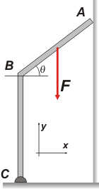
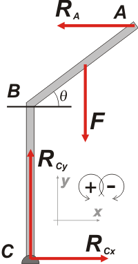
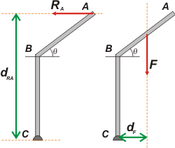

NO ME SALEN
(EJERCICIOS RESUELTOS Y APUNTES TEÓRICOS DE FÍSICA)
Estática
|
|

|
| |
FIS s2.16 - La barra rígida de peso despreciable mostrada en la figura tiene un extremo C unido al piso por medio de una articulación y su otro extremo A se apoya en una pared vertical. El segmento BC es perpendicular al piso. Sabiendo que la intensidad de la fuerza F es de 40 kgf y que está aplicada en el punto medio de AB, que BC = 0,7 m, AB = 0,5m, θ = 37º y que la pared vertical es perfectamente lisa, calcular:
a) El vector fuerza de reacción de la pared en el punto A.
b) El vector fuerza de reacción en el punto C. |
 |
|
|
Sabemos que hay que empezar por un DCL. |
|
|
|  |
Las fuerzas que actúan sobre la escalera son tres: el apoyo en la pared, RA, la fuerza esa que se aplica en el segmento oblicuo, F, y la fuerza que le hace el piso que, para ir ganando tiempo ya descompuse en las direcciones del SR, RCx y RCy.
La frase la pared vertical es perfectamente lisa sugiere que en ese punto de apoyo no aparecen fuerzas paralelas a la pared, no hay rozamiento.
Las ecuaciones de Newton garantizan el equilibrio de traslación:
ΣFx = RCx — RA = 0
ΣFy = RCy — F = 0
Ahora vamos a la sumatoria de momentos, que es lo que garantiza que esta barra doblada no va a estar girando.
Tomemos el centro de momentos en C, y prestemos suma atención a las distancias desde la recta de acción de las fuerzas RA y F hasta el punto C. |
|
|
ΣMC = RA (BC + AB sen θ) — F (AB/2) . cos θ = 0
Si sos de los que le cuesta encontrar la distancia correcta para evaluar los momentos de cada fuerza, tal vez te ayuden estos grafiquitos: |
|
|  |
Para hallar fácilmente esas distancias tenés que prolongar la recta de acción de cada fuerza (líneas punteadas naranjas), el segmento perpendicular a esa recta que pasa por el punto tomado como centro de giro (C) es la distancia que le corresponde a cada fuerza.
El resto es fácil, siempre hay algún triangulito rectángulo en el que podés calcular el cateto que te interese para hallar la distancia que buscás. |
|
|
Lo que resta es reemplazar con los valores y realizar los cálculos. De la sumatoria de fuerzas en y surge que:
RCy = F
RCy = 40 kgf
De la de momentos:
RA= F (AB/2) . cos θ / (BC + AB sen θ)
RA= 40 kgf(0,5 m/ 2) . 0,8 / (0,7 m + 0,5 m 0,6)
RA= 8 kgf
Nos piden "el vector", de modo que vamos a expresarlo vectorialmente según nuestro sistema de referencia: |
|
|
|
Con ese valor vamos a la ecuación de fuerzas en x y tenemos:
RCx = RA
RCx = 8 kgf
De donde el vector reacción en el punto C será: |
|
|
|
|
|
La barra doblada de este ejercicio suele confundir en el siguiente aspecto: hay quien deduce que el punto B es articulado. Pero no hay ningún motivo para pensar eso. |
|
|
Desafio: ¿Y cómo expresar el vector RC en módulo y ángulo que forma con el eje x? |
|
 |
| |
|
| Algunos derechos reservados.
Se permite su reproducción citando la fuente. Última actualización oct-19. Buenos Aires, Argentina. |
|
|
|